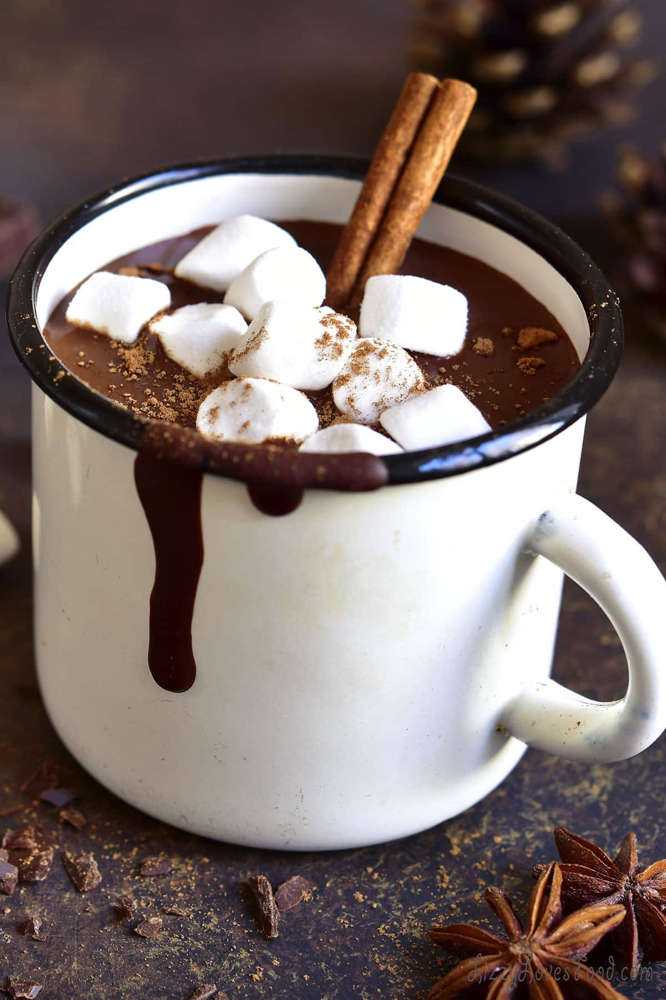

Cozy Cafe
These are some of our new drinks and desserts. The menu is underneath the images.





At Cozy Café, our pastries and breads are crafted fresh every morning to bring warmth and comfort to every bite. Our flaky croissants, buttery danishes, and soft muffins pair perfectly with the inviting aroma of our shop. We also offer a selection of artisan breads, from hearty sourdough loaves to light and fluffy brioche, perfect for a cozy breakfast or afternoon snack. Every pastry and bread item is made with the finest ingredients to ensure a rich, delicious flavor that feels like home.
For those with a sweet tooth, our dessert menu is a true delight. Indulge in decadent cakes, rich brownies, creamy cheesecakes, and delicate tarts that are as beautiful as they are delicious. Whether you're craving a classic chocolate treat or a refreshing fruit dessert, Cozy Café has something to satisfy every craving. Each dessert is lovingly made to offer the perfect balance of sweetness and texture, making every bite memorable.
Of course, no visit to Cozy Café would be complete without sampling our signature drinks. Our expertly brewed coffee is bold and smooth, available hot or iced to suit your mood. For something a little more adventurous, try one of our creamy frappes or a perfectly layered macchiato, each one crafted to perfection. We also offer a variety of other beverages, from herbal teas to refreshing lemonades, making Cozy Café the ideal spot to relax and sip on something special.